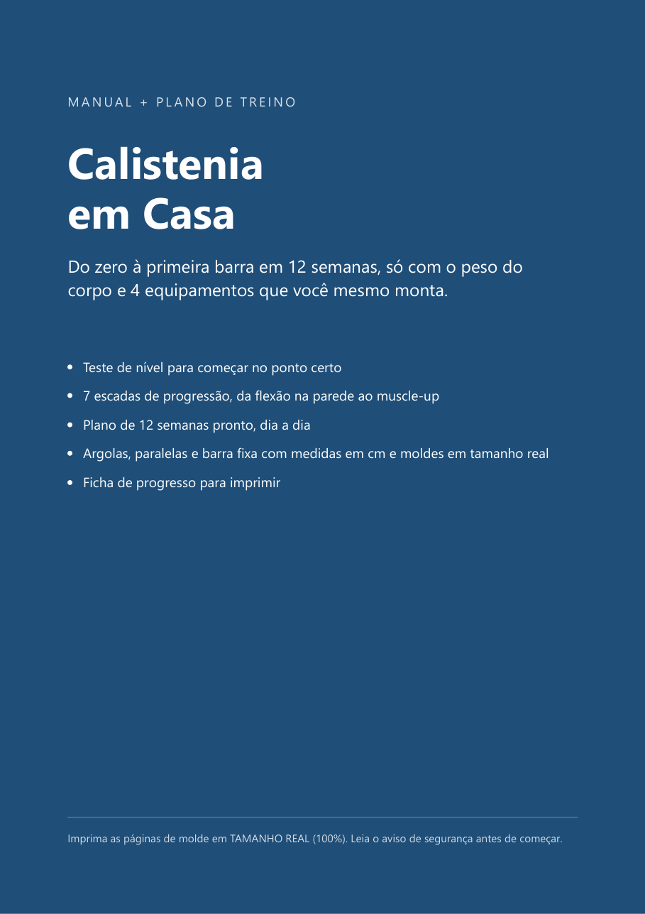
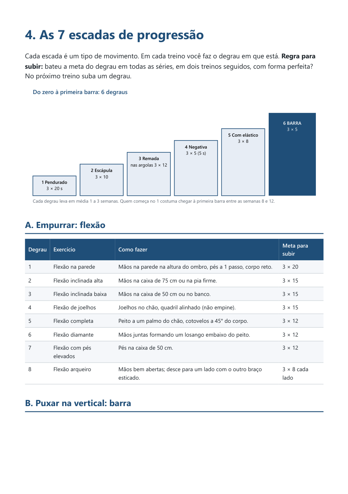
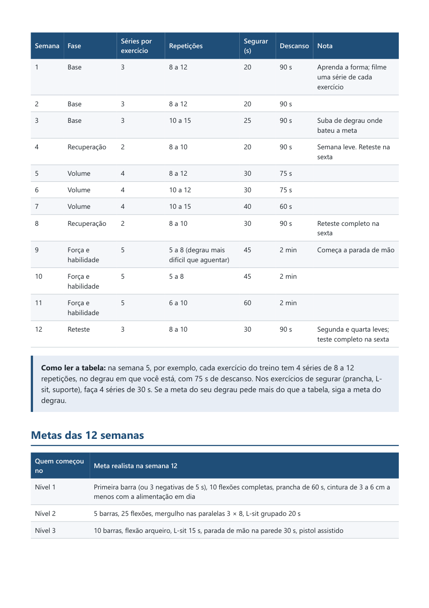
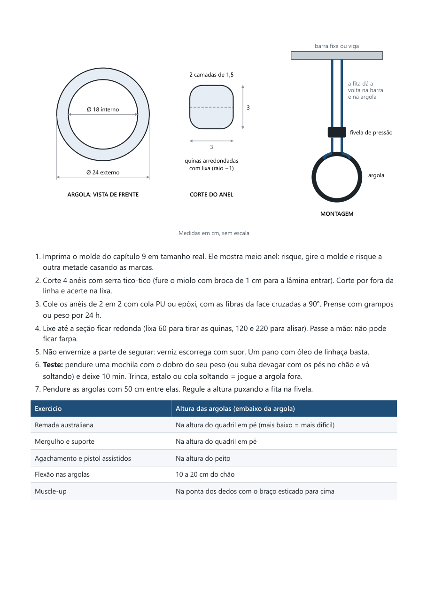

Um plano pronto de calistenia, só com o peso do corpo. Você sabe o que fazer em cada dia, quando subir de nível e como montar os equipamentos gastando pouco.
Quero o plano por R$ 27
Vídeo solto, treino aleatório, 100 abdominais por dia. Na segunda semana você não sabe se está evoluindo, não sabe quando deixar mais difícil e acaba parando. O que falta não é academia, é um caminho.
Chão, parede, uma barra e argolas que você mesmo monta. Nada de mensalidade.
Cada exercício tem uma meta. Bateu a meta, sobe um degrau. Simples assim.
Teste no começo e retestes nas semanas 4, 8 e 12. Você vê o número subir.
Quem não consegue fazer uma barra não começa pela barra. Começa pendurado, passa pela escápula, pela remada nas argolas, pela negativa e pelo elástico. Cada degrau tem a meta para passar ao próximo.
O mesmo vale para flexão, pernas, mergulho, abdômen, flancos e parada de mão: são 7 escadas de progressão, da flexão na parede ao muscle-up.


Argolas de ginástica de compensado por cerca de R$ 60, paralelas de madeira e barra fixa no teto. Lista de material, passo a passo, teste de carga e moldes em tamanho real para imprimir, recortar e riscar.

Não faz nenhuma barra e poucas flexões. O teste de nível coloca você no degrau certo.
Treino de força + cardio + o básico da alimentação. Sem promessa milagrosa, com plano.
As escadas vão até flexão arqueiro, L-sit, parada de mão e muscle-up.
Manual em PDF · 19 páginas · plano de 12 semanas · 7 escadas · moldes em tamanho real
Para começar, de nada além do chão, de uma parede e de uma cadeira firme. Para as escadas da barra e da remada você vai precisar de uma barra fixa e de argolas; o manual ensina a montar os dois.
Serve, foi feito para isso. A escada da barra começa em ficar pendurado por 20 segundos.
De 40 a 50 minutos nos 3 dias de força e de 20 a 30 minutos nos dias de cardio, mais 10 minutos de mobilidade.
A barriga sai quando o corpo todo perde gordura, e isso depende principalmente da alimentação. O manual explica o básico e o treino ajuda a manter o músculo e a firmar a cintura. Ninguém sério pode prometer quantos quilos você vai perder.
Logo depois do pagamento você recebe o acesso por e-mail e baixa o PDF.
Se tiver problema de coluna, ombro, coração ou pressão, fale com seu médico antes de começar.